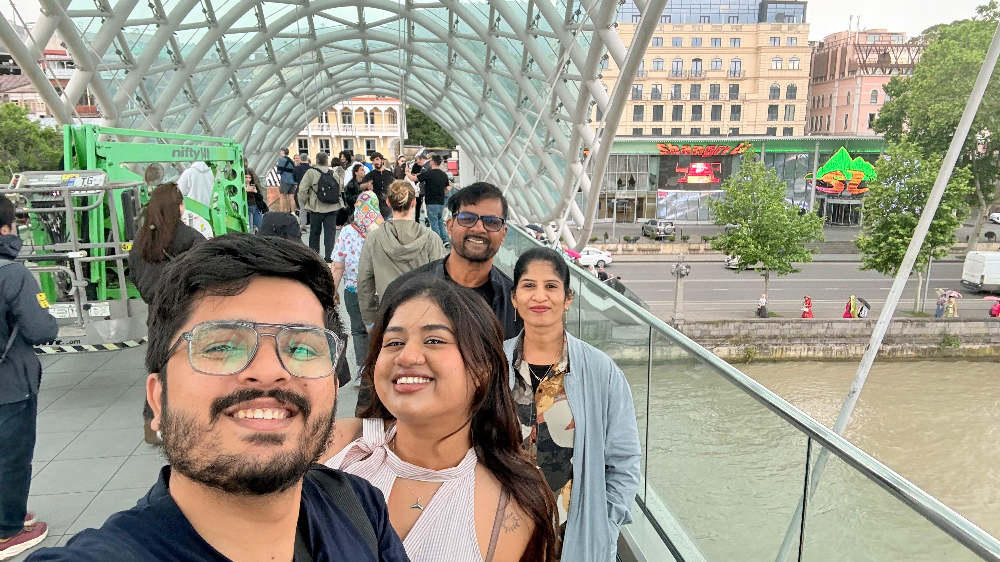
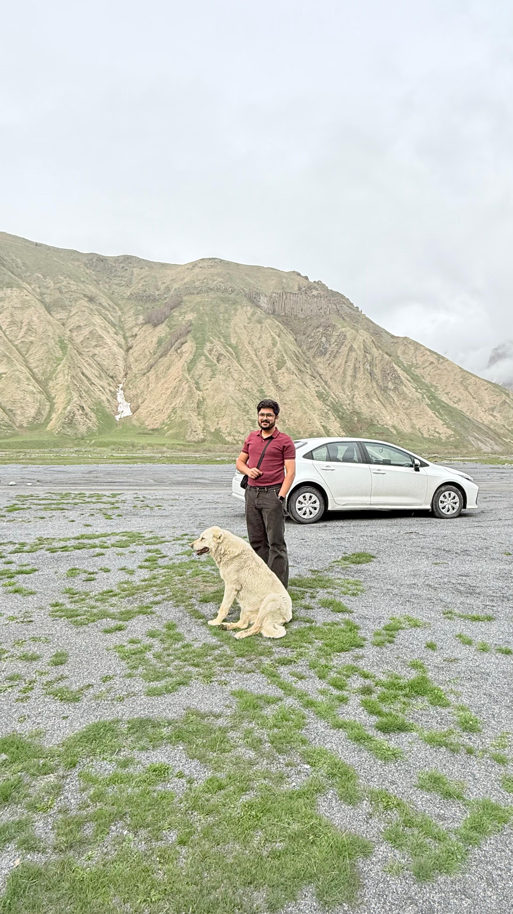
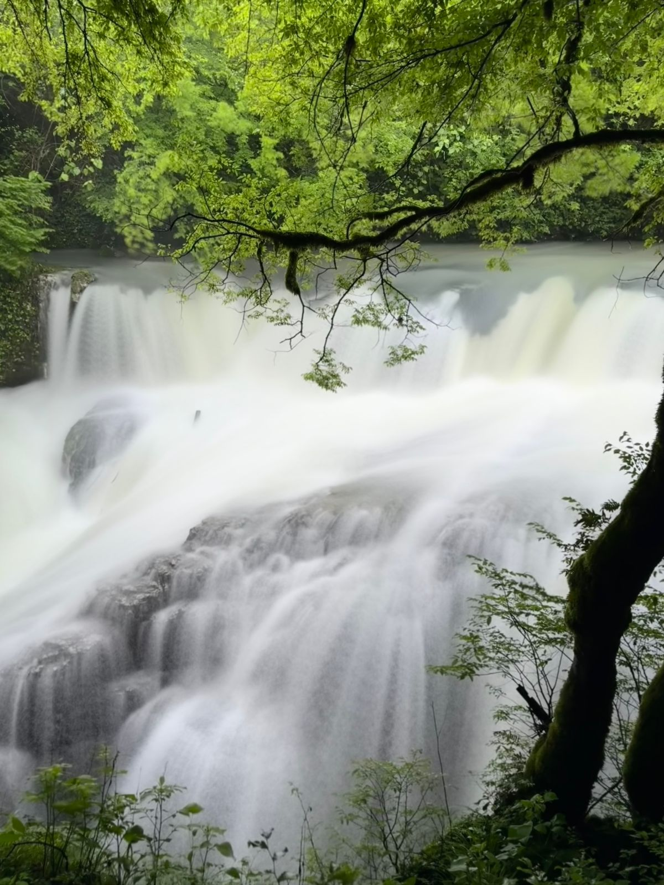
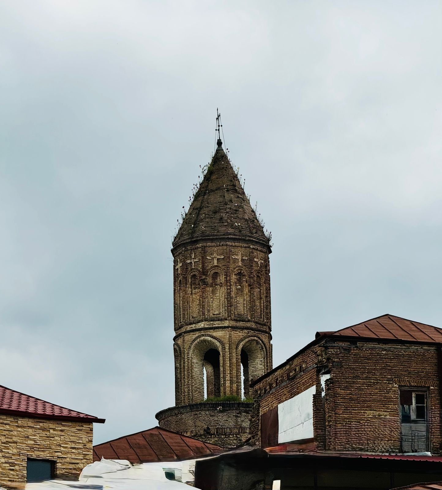
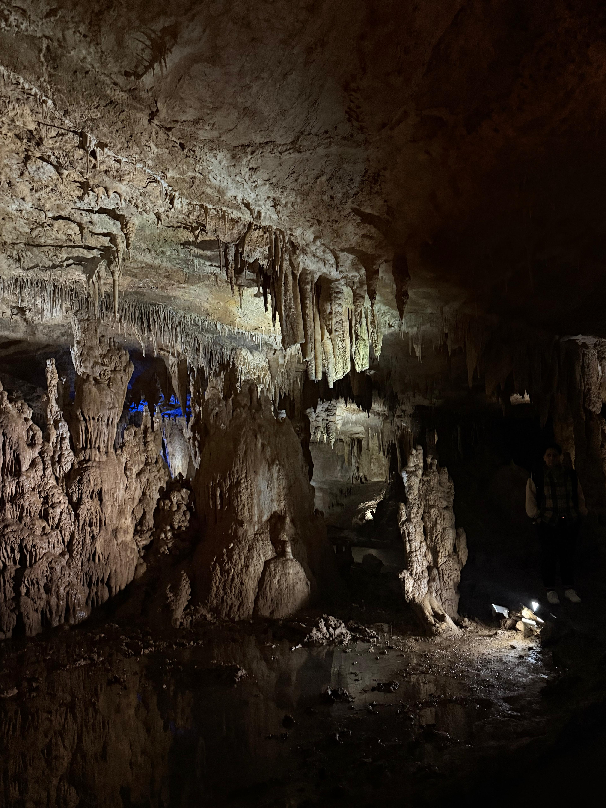
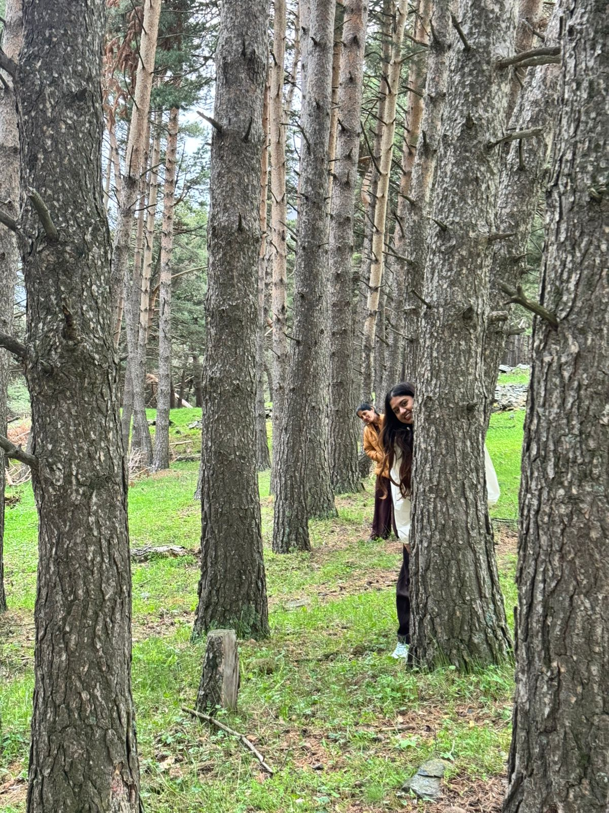
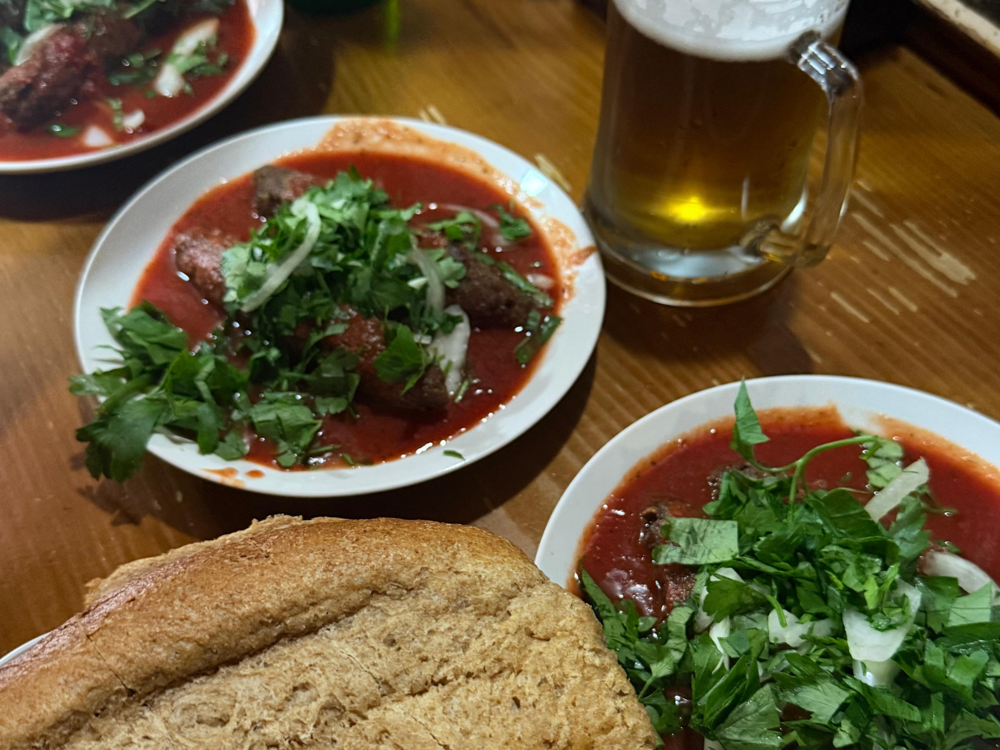

Georgia had been sitting on our list for ages. Dramatic mountains, ancient churches, cheese bread by the kilo, and prices that don't make you wince every time you open your wallet — what's not to love? So when my parents said they'd fly over from India to join us, we finally stopped talking about it and booked the flights.
Here's the honest version of how it went. The landscapes? Unreal. The food? Genuinely some of the best we've eaten. The people? We'll get to that.
On this page
Table of contents
Arrival
Getting there (and actually getting in)
We flew London to Tbilisi direct. For us, immigration was a non-event — they glanced at our UK work visas and US travel visas, nodded us through, done. No visa needed.
If you're travelling on an Indian passport, though, please read this bit properly.
My parents flew in the next day, and even with valid e-visas, it was a different experience. Georgian border control has a bit of a reputation for being tough on Indian passport holders — we'd read stories of people turning up with legitimate visas and still getting turned away, which is just unfair. So Mum and Dad came over-prepared:
- A printed itinerary with accommodation confirmations
- Recent bank statements showing they had funds
- Cash in hand (Euros or USD)
- Proof they were travelling with us and that we were covering the costs
Mum mentioned she was coming to see her daughter and that we were funding the trip, and that seemed to smooth things along. They got through — but it wasn't warm, and it wasn't quick. Just go in ready, and don't assume the e-visa alone has you covered.

Travel mistake
The airport taxi scam (please don't be us)
We landed at 5:30am, running on zero sleep, and made the most classic rookie mistake in the book.
I knew Bolt was the move — I'd read it a hundred times. But the second I pulled out my phone, a driver clocked it and jumped in: "Don't book that, I'm a Bolt driver anyway, the app just adds commission. I'll take you direct, cheaper."
Dillon was wrecked, I was wrecked, and the hotel bed was calling. So we caved.
By the time we pulled up at the Sheraton, he'd charged us more than three times what Bolt would have. Lovely.
Lesson: Download Bolt before you even land, use it for every single ride, and completely ignore anyone who approaches you at arrivals. They're not doing you a favour — they're betting on you being too tired to argue. We used Bolt religiously after that and never had a single issue.
Tbilisi
Day 1 — Arrival and doing absolutely nothing
After the taxi saga, we checked into the Sheraton Grand Tbilisi (handy for the airport) and were gloriously unproductive. Spa, pool, room service, sleep. Honestly? Sometimes the best start to a holiday is no start at all.
City wander
Day 2 — Parents land, Tbilisi begins
Mum and Dad arrived, we regrouped, and the trip properly began. Tbilisi's Old Town is compact and made for wandering — cobbled streets, leaning wooden balconies, sulphur bath domes, little churches tucked into the hillsides.
What we covered:
- Narikala Fortress — take the cable car up for the views, then walk down through the botanical garden if your knees are willing
- Abanotubani (the bath district) — we skipped an actual sulphur bath this time, but the architecture alone is worth the stroll
- Meidan Bazaar & the Clock Tower — chaotic, quirky, very photogenic; good spot for spices, wine and chacha
- Holy Trinity Cathedral (Sameba) — huge, gold-domed, impressive from any angle
- Rustaveli Avenue — the main boulevard, perfect for an evening walk
The weather, though, had other plans — grey, drizzly, very London-in-April. I'd assumed late May would be settled and warm. It was not. It changed every five minutes. Pack layers and a waterproof, even in "summer."

Mountain highlight
Days 3–4 — The drive to Kazbegi
This was the highlight of the whole trip, no contest.
We rented a car for the entire trip and I'd recommend it in a heartbeat if you're a group — split four ways it was genuinely cheap. We barely touched it in Tbilisi (traffic and parking are a headache, Bolt wins there), but for everything outside the city, having our own wheels was everything.
Stops along the Georgian Military Highway:
- Ananuri Fortress — a 16th-century castle complex over a reservoir; gorgeous and easy to explore
- Jinvali Reservoir — that bright turquoise water against green hills
- Gudauri — Georgia's ski resort; quiet in late May, but the viewpoints deliver
- Russia–Georgia Friendship Monument — a Soviet-era mosaic over the mountains; kitschy, but you'll want the photo
- Jvari Pass — the highest point on the road; the air's noticeably thinner and colder up here
One very practical heads-up: roadside rest stops are few and far between, and the public toilets you do find usually charge a small fee — cash only. We got caught out near Ananuri, absolutely bursting, with nothing but cards on us. Carry small change. Learn from our discomfort.

We stayed in a little cottage near Gergeti Trinity Church, and waking up to snow-capped Caucasus peaks out of the window genuinely didn't feel real. The good news: you no longer need a 4x4 to get up to the church. The road's been improved and we drove our regular rental almost all the way, with just a short walk at the end. You can hike it too (around an hour, fairly steep), but with the weather as moody as it was, we were happy to drive. Do check current road conditions before you go, but when we visited it was absolutely fine.
Kazbegi (officially Stepantsminda) is tiny and quiet — one main street, a handful of guesthouses, a couple of restaurants. It's a slow-down, breathe-the-mountain-air, stare-at-the-view kind of place. Exactly what we needed.

Caves and canyons
Days 5–6 — Kutaisi and the caves
From Kazbegi we drove west to Kutaisi, Georgia's second city. It's smaller and rougher around the edges than Tbilisi, but it's a brilliant base for some of the country's best natural sights.
We booked a day tour through GetYourGuide covering:
- Prometheus Cave — enormous underground caverns lit up in colour; spectacular even without the boat ride
- Martvili Canyon — turquoise water, overhanging cliffs, the whole postcard
Sadly, we couldn't do the boating at either spot. It had been chucking it down, water levels were too high, and the boats weren't running. I've seen the photos and it looks stunning, so that one stung a little. The caves and canyon are still 100% worth it without the boats — but if boating is the dealbreaker for you, check conditions before you book.
Worth saying: our guide here was one of the few genuinely warm, chatty, helpful Georgians we met — knowledgeable, friendly, going out of their way to make everyone comfortable. A really nice contrast to the general vibe elsewhere.
In Kutaisi itself we visited:
- Bagrati Cathedral — partially restored, with lovely hilltop views
- Gelati Monastery — a UNESCO site with beautifully preserved frescoes

Back to Tbilisi
Days 7–8 — Back to Tbilisi (and wine)
We looped back to the capital for our last couple of days — partly to rest, partly to mop up anything we'd missed, and partly because we had a wine tour booked.
The tour took us out to the Kakheti region, including:
- Sighnaghi — a picture-perfect hilltop town of terracotta roofs and vineyard views, nicknamed "the city of love"
- A few family wineries where we tried traditional qvevri wines (fermented underground in clay vessels)
The day itself was great — you're tasting wine from morning to evening, travelling with other tourists (good for a bit of socialising), and learning about how Georgians have been making wine for thousands of years. The wine itself is unlike anything we'd had before: earthy, tannic, amber-coloured whites.
A reality check on price, though. Coming from the UK, I assumed wine and chacha would be dirt cheap. Compared to a London bar, sure. But if you're picturing stocking up for a song, adjust your expectations — it's not the bargain you'd think. I've bought Raki in Turkey that tastes similar to chacha, at similar strength, for noticeably less. Still worth trying. Just don't plan your whole suitcase around it.

Food notes
The food (the real star)
Okay, the food. Georgian cuisine is hearty, carb-forward and absolutely delicious, and it might have been my favourite part.
What we loved:
- Khachapuri — cheese-filled bread in all sorts of regional styles; the Adjarian one (boat-shaped, with egg and butter) is the famous one for a reason
- Khinkali — soup dumplings; a faff to eat, deeply satisfying
- Ojakuri — pan-fried pork and potatoes with onions; simple and perfect
- Kebabs — juicy, properly spiced and cheap; honestly my top pick of the trip
- Churchkhela — those grape-juice-and-walnut "candles" you'll see hanging everywhere
Wine is, of course, on every table. We also tried chacha (Georgian grape brandy) — once was plenty.

Useful details
The practical bits
| Trip length | 9 nights / 10 days |
|---|---|
| Better for | 5–7 days if you're moving faster or skipping Kutaisi |
| Budget | Generally affordable vs London — food, transport and stays are all cheaper (alcohol less so than you'd expect) |
| Transport | We rented a car for the whole trip and used it for everything outside Tbilisi. In the city, Bolt is easier — traffic and parking are a pain. Bolt works everywhere in Georgia. |
| Weather | Genuinely unpredictable — we had rain, sun and cold mountain air in one week. Layers, even in summer. |
| Language | Georgian script is beautiful and completely unreadable; English is hit-or-miss outside tourist spots |
| Connectivity | We used a Holafly eSIM — unlimited data for 8 days, affordable, and it worked everywhere including remote mountain roads. Essential for Google Maps. |
| Cash | Carry small notes and coins. Cards are fine in Tbilisi and most restaurants, but public toilets, small vendors and rural stops are often cash-only. |
Left for next time
What we skipped
Batumi — Georgia's Black Sea resort town. We ran out of days, and after a week of mountains and caves, a beach town honestly felt like a different trip entirely. Next time, maybe.
Real talk
Honest thoughts
Georgia is genuinely stunning. The mountains, the churches, the food, the wine — all worth it. It's affordable, it's an easy hop from London, and it doesn't feel like anywhere else we've been.
But I'd be lying if I told you the people were warm. With a few exceptions — our GetYourGuide guides, some lovely restaurant staff — most interactions felt cold. Not rude exactly, just distant. People did their jobs but didn't smile, didn't chat, didn't seem all that fussed about making you feel welcome. Maybe it's a cultural thing, but it was noticeable enough that we kept commenting on it.
The visa situation for Indian travellers is the other frustrating part. My parents got through, but only because they turned up over-prepared. The inconsistency, and the stories of unfair rejections, leave a bit of a sour taste.
Would we go back? Probably — there's more to see, and those landscapes really are something. We'd just go in with realistic expectations about the hospitality.
For your trip
If you're planning your own Georgia trip
- Download Bolt before you land — and ignore the airport taxi drivers entirely. We got scammed on arrival so you don't have to.
- Rent a car for everything outside Tbilisi — the freedom is worth it, and the drives are half the magic.
- You can drive up to Gergeti Trinity Church — the road's been improved, no 4x4 needed (but verify current conditions).
- Carry cash — especially small change for public toilets and rural stops.
- Bring layers — the weather flips constantly, even in late May.
- Get an eSIM — we used Holafly; unlimited data, no faffing with physical SIMs.
- Check the weather before booking cave or canyon tours — heavy rain means no boating.
- Travelling from India? Print everything, bring bank statements, carry cash, and brace for extra scrutiny at immigration.